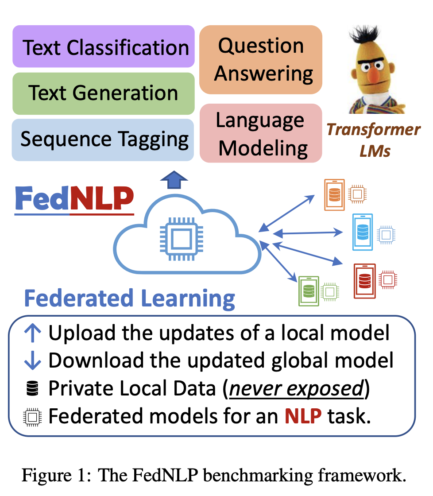
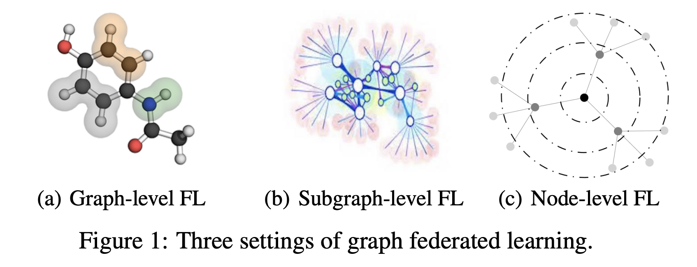
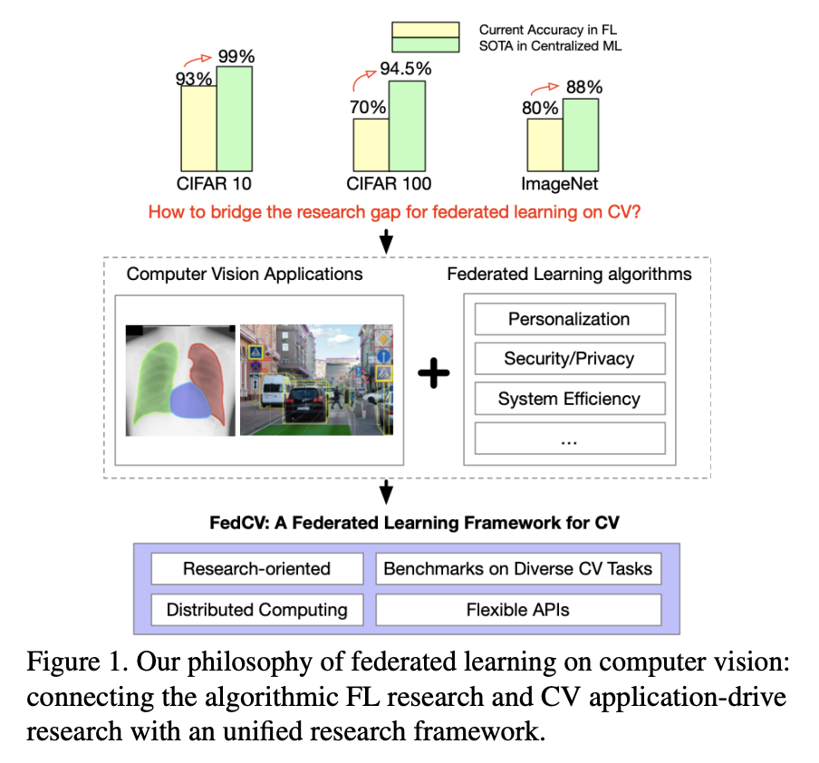
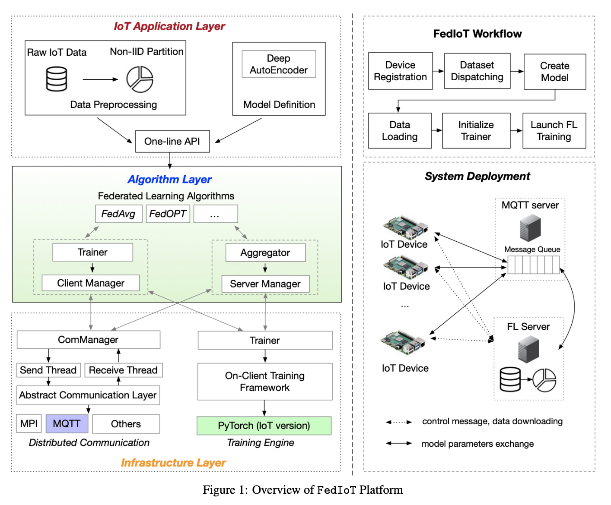

Application Ecosystem
The FedML Ecosystem facilitates federated learning research and productization in diverse application domains. With the foundational support from FedML Core Framework, it supports FedNLP (Natural Language Processing), FedCV (Computer Vision), FedGraphNN (Graph Neural Networks), and FedIoT (Internet of Things).
FedNLP: Benchmarking Federated Learning Methods for Natural Language Processing Tasks
Arxiv: https://arxiv.org/pdf/2104.08815.pdf
Published at NAACL 2022.
Increasing concerns and regulations about data privacy and sparsity necessitate the study of privacy-preserving, decentralized learning methods for natural language processing (NLP) tasks. Federated learning (FL) provides promising approaches for a large number of clients (e.g., personal devices or organizations) to collaboratively learn a shared global model to benefit all clients while allowing users to keep their data locally. Despite interest in studying FL methods for NLP tasks, a systematic comparison and analysis is lacking in the literature. Herein, we present the FedNLP, a benchmarking framework for evaluating federated learning methods on four different task formulations: text classification, sequence tagging, question answering, and seq2seq. We propose a universal interface between Transformer-based language models (e.g., BERT, BART) and FL methods (e.g., FedAvg, FedOPT, etc.) under various non-IID partitioning strategies. Our extensive experiments with FedNLP provide empirical comparisons between FL methods and helps us better understand the inherent challenges of this direction. The comprehensive analysis points to intriguing and exciting future research aimed at developing FL methods for NLP tasks.

FedGraphNN: A Federated Learning Benchmark System for Graph Neural Networks
Arxiv: https://arxiv.org/pdf/2111.11066.pdf
Published at ICLR'21-DPML and MLSys'21-GNNSys workshops
Graph Neural Network (GNN) research is rapidly growing thanks to the capacity of GNNs in learning distributed representations from graph-structured data. However, centralizing a massive amount of real-world graph data for GNN training is prohibitive due to privacy concerns, regulation restrictions, and commercial competitions. Federated learning (FL), a trending distributed learning paradigm, provides possibilities to solve this challenge while preserving data privacy. Despite recent advances in vision and language domains, there is no suitable platform for the FL of GNNs. To this end, we introduce FedGraphNN, an open FL benchmark system that can facilitate research on federated GNNs. FedGraphNN is built on a unified formulation of graph FL and contains a wide range of datasets from different domains, popular GNN models, and FL algorithms, with secure and efficient system support. Particularly for the datasets, we collect, preprocess, and partition 36 datasets from 7 domains, including both publicly available ones and specifically obtained ones such as hERG and Tencent. Our empirical analysis showcases the utility of our benchmark system, while exposing significant challenges in graph FL: federated GNNs perform worse in most datasets with a non-IID split than centralized GNNs; the GNN model that attains the best result in the centralized setting may not maintain its advantage in the FL setting. These results imply that more research efforts are needed to unravel the mystery behind federated GNNs. Moreover, our system performance analysis demonstrates that the FedGraphNN system is computationally efficient and secure to large-scale graphs datasets.

FedCV: A Federated Learning Framework for Diverse Computer Vision Tasks
Arxiv: https://arxiv.org/pdf/2104.07145.pdf
Published at FL-AAAI’2022
Federated Learning (FL) is a distributed learning paradigm that can learn a global or personalized model from decentralized datasets on edge devices. However, in the computer vision domain, model performance in FL is far behind centralized training due to the lack of exploration in diverse tasks with a unified FL framework. FL has rarely been demonstrated effectively in advanced computer vision tasks such as object detection and image segmentation. To bridge the gap and facilitate the development of FL for computer vision tasks, in this work, we propose a federated learning library and benchmarking framework, named FedCV, to evaluate FL on the three most representative computer vision tasks: image classification, image segmentation, and object detection. We provide non-I.I.D. benchmarking datasets, models, and various reference FL algorithms. Our benchmark study suggests that there are multiple challenges that deserve future exploration: centralized training tricks may not be directly applied to FL; the non-I.I.D. dataset actually downgrades the model accuracy to some degree in different tasks; improving the system efficiency of federated training is challenging given the huge number of parameters and the per-client memory cost. We believe that such a library and benchmark, along with comparable evaluation settings, is necessary to make meaningful progress in FL on computer vision tasks

FedIoT: Federated Learning for Internet of Things
Arxiv: https://arxiv.org/pdf/2106.07976.pdf
Published at ACM Sensys’21
Federated learning can be a promising solution for enabling IoT cybersecurity (i.e., anomaly detection in the IoT environment) while preserving data privacy and mitigating the high communication/storage overhead (e.g., high-frequency data from time-series sensors) of centralized over-the-cloud approaches. In this paper, to further push forward this direction with a comprehensive study in both algorithm and system design, we build FedIoT platform that contains FedDetect algorithm for on-device anomaly data detection and a system design for realistic evaluation of federated learning on IoT devices. Furthermore, the proposed FedDetect learning framework improves the performance by utilizing a local adaptive optimizer (e.g., Adam) and a cross-round learning rate scheduler. In a network of realistic IoT devices (Raspberry PI), we evaluate FedIoT platform and FedDetect algorithm in both model and system performance. Our results demonstrate the efficacy of federated learning in detecting a wider range of attack types occurred at multiple devices. The system efficiency analysis indicates that both end-to-end training time and memory cost are affordable and promising for resource-constrained IoT devices.
